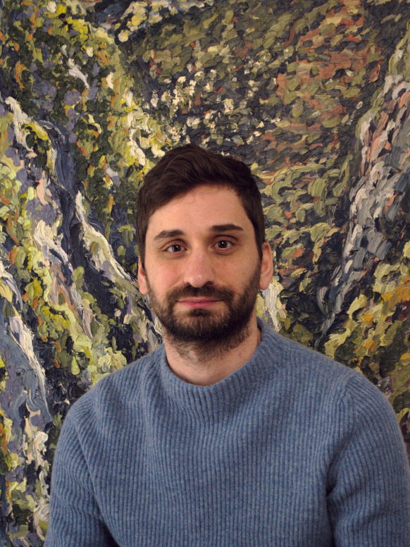

Ξεκίνησα το 2019 να εξερευνώ τα τοπία της Αττικής και της Ηπείρου αναζητώντας τον ελληνικό ήλιο και τα χρώματα. Ακολουθώ την ιμπρεσιονιστική διαδικασία και τεχνική, μέσα στο τοπίο και μπροστά στο θέμα μου όπως αυτό εξελίσσεται, αποτυπώνοντας την εφήμερη φύση της ατμόσφαιρας και των εποχών, ζωγραφίζοντας το φως όπως το μετράω και το αισθάνομαι. Ως κάτοικος της Αθήνας, δεν βλέπω το έργο μου ως μια πρόταση φυγής από μια σύγχρονη μεγαλούπολη, αλλά ως ανησυχία για τη ποιότητα ζωής και την αισθητική που απομονώνεται σε σημεία φυσικού κάλους μακρυά από το αστικό περιβάλλον. Επέλεξα τα χρώματα λαδιού για τον τρόπο που αντανακλούν το φως και αναδεικνύουν τις χρωστικές και για τον όγκο που δίνουν στις πινελιές.